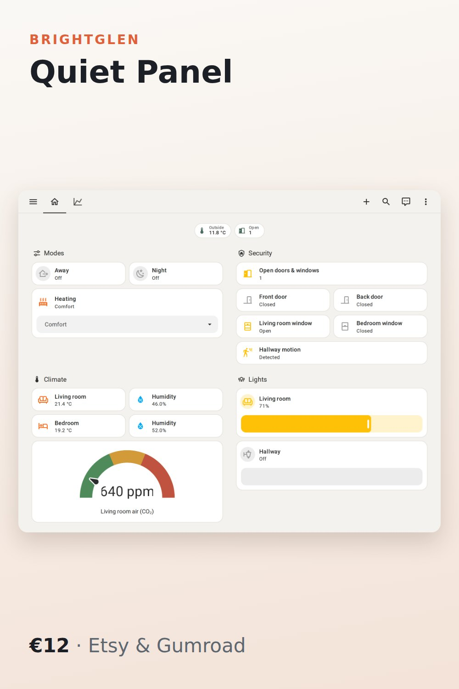
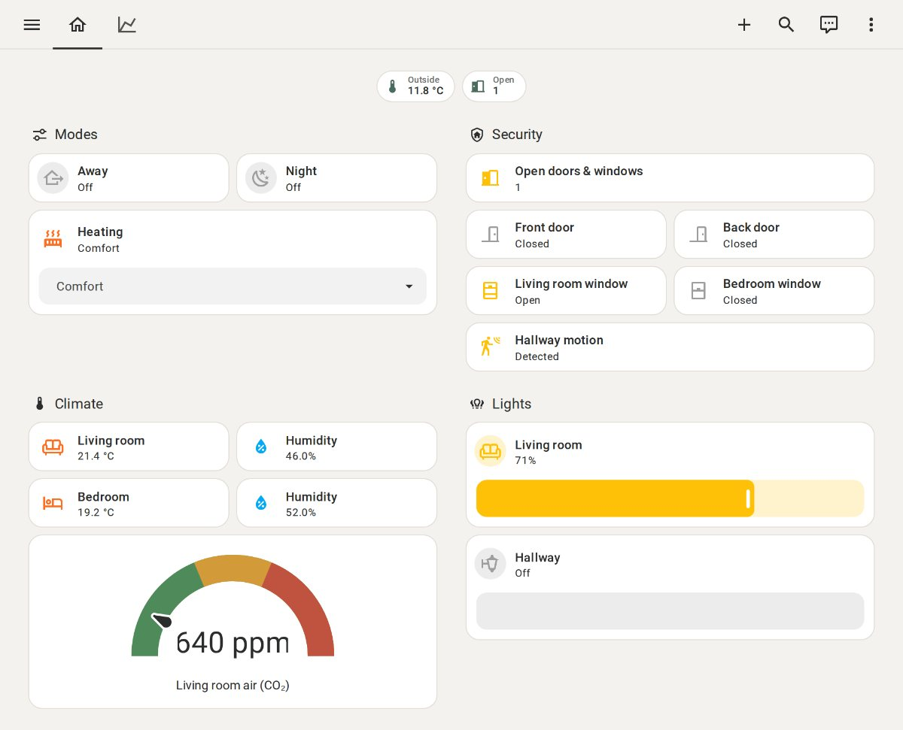
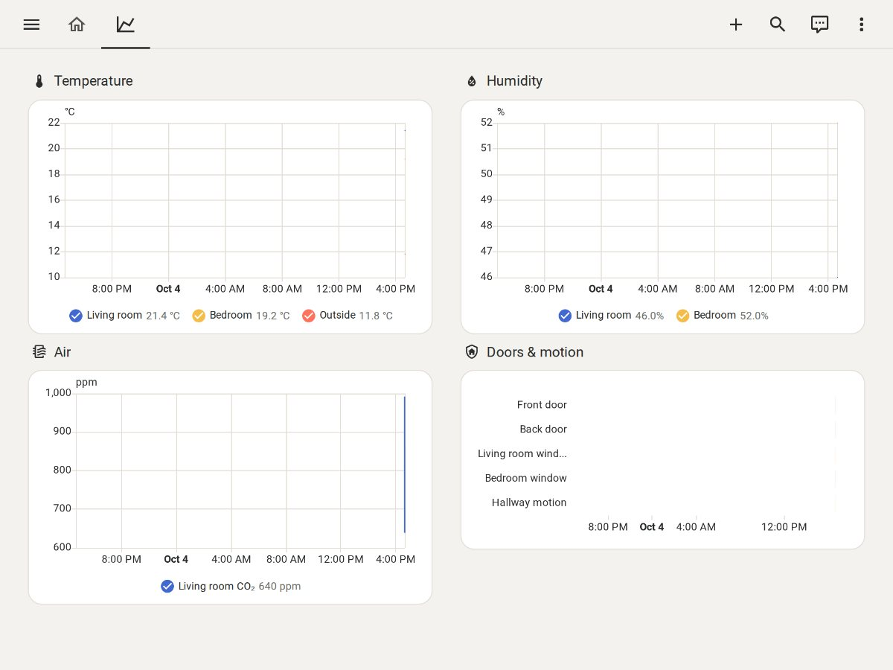
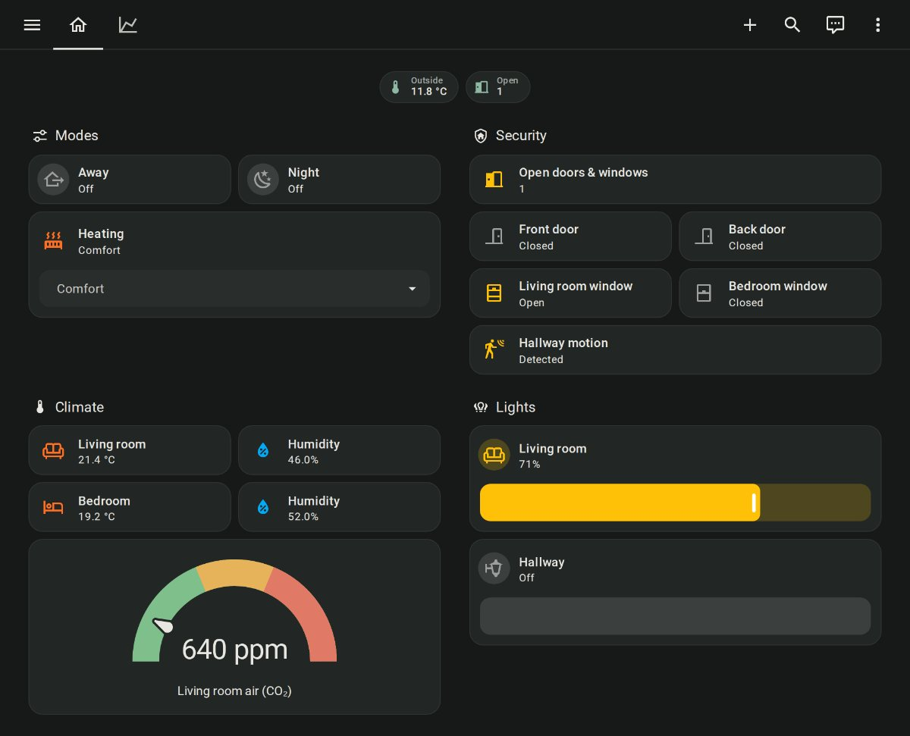

Quiet Panel
A tidy wall tablet and phone dashboard built only from built-in cards. Nothing extra to install or maintain.
€12
Buy on EtsyBuy on GumroadQuiet Panel is a calm, low-clutter dashboard for a wall tablet or a phone, built only from the cards that come with Home Assistant. No HACS or custom cards needed, so there is nothing extra to install or keep updated.
At a glance: is anything open, is anyone home, is it warm, is the air fresh, are the lights off?
What's included
- One dashboard (YAML) with two views: Home (modes, security, climate, lights) and Trends (24-hour history)
- The Quiet Panel theme with light and dark modes
- Three automation blueprints:
- Night routine: night mode on at bedtime and off again at your wake-up time
- Night path light: a soft light on motion while night mode is on
- Away mode: heating to Eco while you're out and back to Comfort when you return (heating that is Off stays Off)
- A setup guide with step-by-step installation and an 'Adapt it to your home' table covering every entity
- Personal-use licence
Requirements
- Home Assistant 2026.9 or newer
- No HACS or custom cards needed
- Sensors it assumes: indoor temperature and humidity, outdoor temperature, a CO2 sensor, door and window contacts, a motion sensor and two dimmable lights
- Three helpers and one template sensor, which the guide helps you create in a few minutes
Good to know
- Tested on Home Assistant 2026.9 on phone, tablet and desktop, in light and dark mode.
- Made with AI assistance: the YAML and this description were written with an AI tool, then tested on a demo Home Assistant instance. The screenshots come from that demo home.
- You map the entity ids to your own devices; the guide shows you how.
- Heating mode is a helper. Link it to your own thermostat or heating schedule.
- Independent product, not affiliated with or endorsed by the Home Assistant project.
Questions? Reply to your Gumroad receipt.